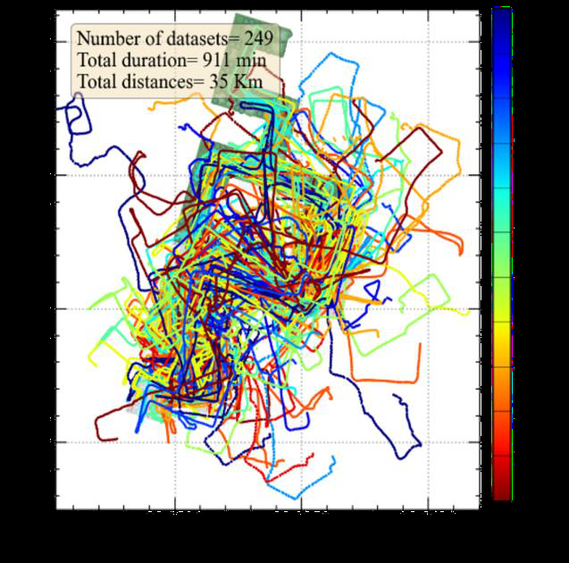
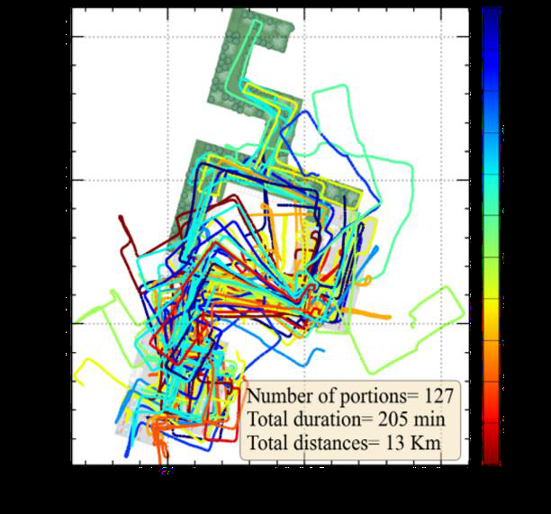

Leveraging human mobility and pervasive smartphone measurements-based crowdsourcing for developing self-deployable and ubiquitous indoor positioning systems
Paper preview

Key figures


Summary
This paper presents a crowdsourcing scheme that uses human mobility and pervasive smartphone measurements to support self-deployable, ubiquitous IPS without relying on manually surveyed radio maps.
When to cite this paper
- human mobility is used for crowdsourced indoor radio map construction
- self-deployable IPS frameworks are introduced
- smartphone measurements support ubiquitous indoor positioning
- indoor-outdoor detection is linked to radio map generation
Keywords
crowdsourcingindoor positioning systemself-deployable systemWi-Fi fingerprintingsmartphoneubiquitous positioningindoor-outdoor detectionPDR
Official link
https://doi.org/10.5194/isprs-archives-XLVIII-1-W2-2023-1119-2023
For publisher-restricted articles, link to the DOI or an allowed accepted manuscript rather than uploading a restricted PDF.
BibTeX
@inproceedings{Mansour2023leveraging,
title = {Leveraging human mobility and pervasive smartphone measurements-based crowdsourcing for developing self-deployable and ubiquitous indoor positioning systems},
author = {Ahmed Mansour and Wu Chen and Duojie Weng and Yang Yang and Jingxian Wang},
year = {2023},
journal = {ISPRS Archives},
doi = {10.5194/isprs-archives-XLVIII-1-W2-2023-1119-2023},
}